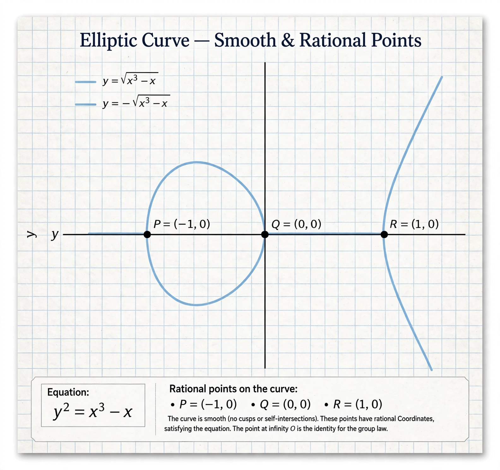

Birch and Swinnerton-Dyer conjecture
| Birch and Swinnerton-Dyer conjecture | |
|---|---|
 | |
| Proposed by | Bryan Birch and Peter Swinnerton-Dyer |
| Proposed | early 1960s |
| Status | Open; proved for analytic rank ≤ 1 cases |
| Prize | Millennium Prize Problem |
The Birch and Swinnerton-Dyer conjecture is one of the seven Millennium Prize Problems of the Clay Mathematics Institute, with a prize of US$1,000,000. It concerns the number of rational points on an elliptic curve and relates it to the behaviour of the curve's L-function at s = 1.
Background
An elliptic curve E over the rationals is given by an equation such as y² = x³ + ax + b. By the Mordell–Weil theorem, the rational points form a finitely generated abelian group: a finite torsion part plus r copies of the integers, where r is the rank. The central question is computing r. In the early 1960s, Bryan Birch and Peter Swinnerton-Dyer ran computations on the EDSAC-2 computer at Cambridge, counting points modulo primes, and observed that the product of local point counts seemed to grow like C·(log N)r — suggesting the rank was encoded in the analytic behaviour of the Hasse–Weil L-function L(E, s).
Statement
The conjecture asserts that L(E, s) has a zero at s = 1 of order exactly equal to the rank r of E(Q): the Taylor expansion of L(E, s) at s = 1 begins with a term (s − 1)r. In particular, E has infinitely many rational points if and only if L(E, 1) = 0. The strong form of the conjecture predicts the leading coefficient exactly, in terms of deep arithmetic invariants: the real period of the curve, the order of the Tate–Shafarevich group Ш, the regulator, Tamagawa numbers, and the torsion subgroup.
Progress
John Coates and Andrew Wiles (1977) proved the conjecture for curves with complex multiplication when r = 0 in the analytic sense. Gross–Zagier (1986) and Kolyvagin (1989) together established the full conjecture for analytic rank 0 and 1. For higher ranks the conjecture remains open, although Bhargava and others have shown that a positive proportion of elliptic curves satisfy it. Numerical evidence is extensive: the conjecture has been verified for vast numbers of curves of small conductor.